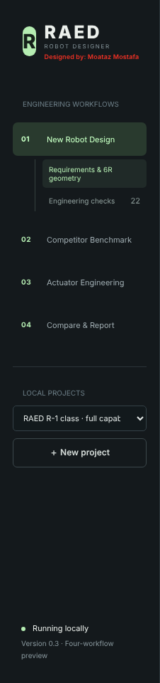
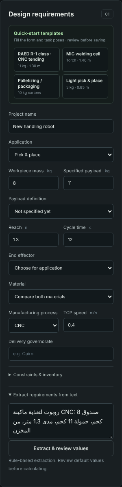
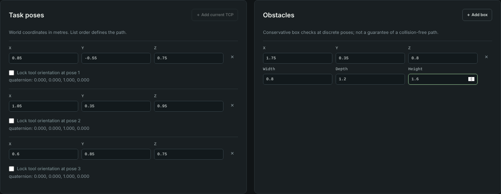
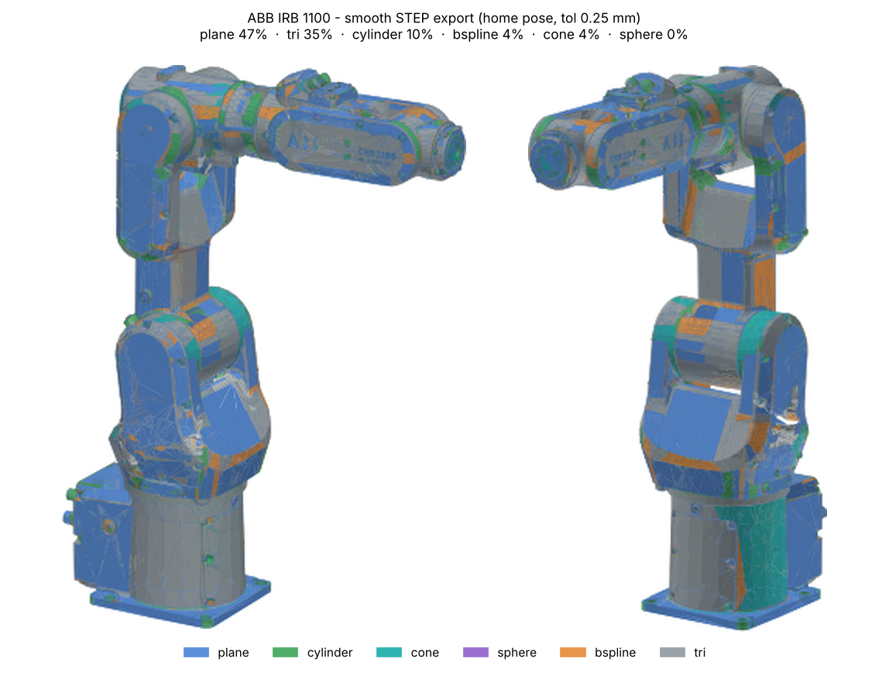
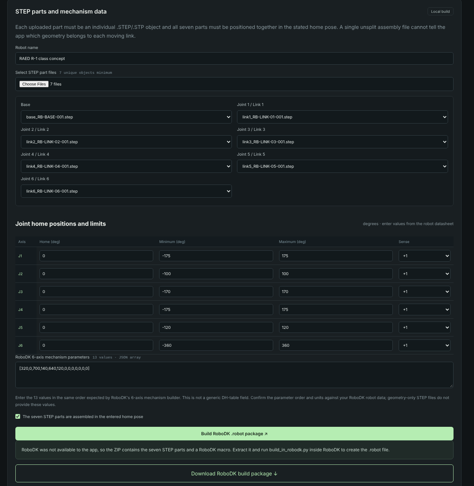

كل جزء في البرنامج: بتدخّل إيه، وبيطلعلك إيه، ومثال حقيقي اتعمل على البرنامج نفسه (روبوت فئة RAED R-1 لتغذية ماكينة CNC + ملف منافس ABB IRB 1100).
الإصدارRAED Robot Designer 0.3
اللغةعربي مصري — والمصطلحات الهندسية زي ما هي في البرنامج
إعدادMoataz Mostafa
البرنامج ده بيعمل إيه؟
البرنامج بيمشي معاك في دورة تصميم روبوت صناعي سداسي المحاور (6R) من أولها لآخرها: تكتب المتطلبات (الحمولة، المدى، التطبيق…)، فيقترح هندسة الذراع، ويحسب العزم على كل محور، ويطلّع BOM، ويقارنك بالمنافسين، وفي الآخر يطلّع حزمة CAD (STEP/STL) وURDF وتقرير PDF — وكل ده مربوط بـ"إصدار" محفوظ ماحدش يقدر يعدّل نتيجته بعد ما اتراجعت.
البرنامج مقسوم لـ 4 أوضاع في الشريط اللي على الشمال، وتحت كل وضع صفحاته:
#
الوضع / الصفحة
بتدخّل إيه (باختصار)
بيطلعلك إيه (باختصار)
01
New Robot Design → Requirements & 6R geometry
الحمولة، المدى، التطبيق، زمن الدورة، الخامة، نقاط المهمة، العوائق، القيود
إصدار محسوب، روبوت في مشهد 3D، كتلة تقديرية، حلول هندسة وصلات + STEP
01
Engineering checks
— (بتقرا الإصدار المحسوب)
~20 فحص: ناجح / فاشل / غير مُتحقق، وكل فحص بسببه ودليله
02
Competitor Benchmark → Import & benchmark
ملف RoboDK .robot لروبوت منافس
بيانات الروبوت + أبعاد كل وصلة + DH + حزمة STEP للوصلات (عادي أو ناعم)
02
STEP → RoboDK .robot
7 ملفات STEP (قاعدة + 6 وصلات) + حدود المفاصل + 13 قيمة آلية
حزمة بناء فيها ماكرو يعمل ملف .robot جوه RoboDK
03
Actuator Engineering → Axis torque sizing
— (الإصدار المحسوب)
أسوأ عزم لكل محور، نسبة الاستغلال، العزم المطلوب، أقل نسبة تخفيض
03
Actuator catalog & BOM
— (الإصدار المحسوب)
BOM كامل + كتالوج المكونات بحالة الدليل + فجوات التوريد في مصر
04
Compare & Report → Design comparison
زرار Compare designs
لحد 6 بدائل (عائلة/خامة/محركات) كإصدارات جديدة + ترتيب Pareto
04
Benchmark vs RAED R-1
زرار Refresh benchmark
تصميمك مقابل هدف R-1 والمنافسين في جدول واحد
04
Review & CAD export
اسم المراجع + ملاحظات
حزمة ZIP (CAD، URDF، BOM، JSON، PDF) + تقرير PDF
قاعدة مهمة في البرنامج كله: أي حاجة مش معروفة بتفضل مكتوبة Unknown / Unverified — البرنامج مش بيخترع أسعار ولا بيفترض إن فحص نجح من غير دليل. فلو شفت "غير مُتحقق" ده معناه "محتاج شغل أو بيانات"، مش "تمام".
0. التشغيل وإدارة المشاريع
تشغيل البرنامج
الدخل
من فولدر المشروع في PowerShell: .\.venv\Scripts\python.exe run.py (أو start.ps1)
الخرج
البرنامج بيفتح على http://127.0.0.1:8765 في المتصفح.
شغال على جهازك بس — مش محتاج إنترنت ولا مفتاح API.
شريط الجنب: الأوضاع والمشاريع

الأوضاع الأربعة، وتحتها قائمة المشاريع وزرار مشروع جديد
الدخل
＋ New project: مشروع جديد فاضي.
قائمة Local projects: تفتح مشروع قديم.
قائمة Current revision (فوق الصفحة): تختار أي إصدار محسوب قبل كده.
الخرج
كل مشروع محفوظ على الجهاز.
كل ضغطة Save & calculate بتعمل إصدار جديد ليه بصمة SHA-256 للمدخلات (زي rev-e7daf6eba8).
الإصدار القديم مابيتغيرش أبدًا؛ لو غيرت أي رقم لازم تحسب تاني.
في مثالنا:مشروع "RAED R-1 class · full capability walkthrough" طلع فيه 4 إصدارات: الأصلي + 3 بدائل اتعملوا من صفحة المقارنة، وتقدر تفتح أي واحد منهم.
MODE 01تصميم روبوت جديد — New Robot Design
1.1 القوالب الجاهزة + متطلبات التصميم
دي أول حاجة تعملها. إما تختار قالب جاهز من Quick-start templates (بيملا الفورم ونقاط المهمة وهدف الهندسة مرة واحدة)، أو تكتب القيم بإيدك.
لوحة المتطلبات بعد اختيار قالب RAED R-1 class · CNC tending
Payload definition — الحمولة شاملة الأداة والمهايئ ولا القطعة بس
Reach (m) و Cycle time (s) و TCP speed (m/s)
End effector — الأداة (جريبر، تورش…) أو "اختار حسب التطبيق"
Material — الخامة (أو قارن الاتنين)، و Manufacturing process: CNC أو Sheet metal
Delivery governorate — المحافظة (لتقرير التوريد)
الخرج
الفورم متعبّي وجاهز للمراجعة.
لو اخترت قالب: نقاط المهمة وهدف محسّن الهندسة بيتملوا كمان.
لسه مافيش حساب — الحساب بيحصل لما تدوس Save & calculate.
في مثالنا (قالب RAED R-1 class · CNC tending):
التطبيق CNC machine tending · القطعة 8 kg · الحمولة 11 kg (شاملة الأداة والمهايئ) · المدى 1.30 m · زمن الدورة 20 s · سرعة TCP 1.0 m/s · الأداة RG2 parallel gripper · الخامة Al 6061 · التصنيع CNC.
1.2 استخراج المتطلبات من نص (عربي أو إنجليزي)
جوه الفورم افتح Extract requirements from text، اكتب الطلب زي ما العميل قاله، ودوس Extract & review values.

القيم بعد الاستخراج
الدخل
جملة حرة، مثلًا: «روبوت لتغذية ماكينة CNC: صندوق 8 كجم، حمولة 11 كجم، مدى 1.3 متر، من المخزن»
فحص inventory_constraint: بيقولك ناقصك إيه بالظبط.
المطابقة حاليًا للمحركات بس؛ باقي المكونات بتفضل غير مُتحقق منها.
في مثالنا:أقصى كتلة 60 kg والكتلة التقديرية 54.1 kg ⇐ ناجح. المخزن فيه SGM7A-08A ×2، SGM7A-04A ×4، SGM7A-01A ×6 ⇐ فشل: SGM7A-08A need 3, have 2 — يعني محتاج تشتري محرك 750 W زيادة قبل التجميع.
1.4 نقاط المهمة والعوائق — Task poses & Obstacles
نقاط المهمة الثلاثة بإحداثيات العالم

النقاط + عائق يمثل غلاف ماكينة الـ CNC
الدخل
＋ Add current TCP: يضيف مكان طرف الروبوت الحالي كنقطة مهمة (بالمتر، إحداثيات العالم) — وترتيب القائمة هو ترتيب المسار.
Search candidates: عدد التركيبات اللي يجربها (3–60).
زرار Optimize link geometry.
الخرج
جدول حلول: طول كل وصلة بالـ mm، خطأ الوصول، هامش المدى.
لكل حل زرار Download STEP package: حزمة فيها 14 جزء + التجميع الكامل (قاعدة، 6 وصلات مجوفة، 6 أغلفة مفاصل، فلانشة أداة) — STEP و STL بالمليمتر وفي وضع Home.
في مثالنا:الهدف نقطة الظرف (1.05, 0.35, 0.95)، 24 تركيبة. أفضل حل متوازن: ذراع علوي 644 mm، ساعد 730 mm، معصم 120 mm، خطأ وصول 0.57 mm، هامش مدى 35 mm. ملاحظة: حلول أقصر (574 / 576 mm) بتوصل برضه وبتقلل عزم J2.
الهندسة دي تقريبية للمراجعة الأولية — مش رسومات تصنيع.
بعد فحص ملف ABB IRB 1100: البيانات، أبعاد كل وصلة، جدول DH وحدود المفاصل — واختيار الأسطح الناعمة فوق
الدخل
ملف RoboDK .robot مسموح لك باستخدامه (من مكتبة RoboDK مثلًا).
Smooth surfaces: لو متعلّم، البرنامج بيعمل هندسة عكسية لأسطح حقيقية بدل المثلثات.
Fit tolerance: 0.10 (أدق) / 0.25 (المقترح) / 0.50 mm (أنعم).
زرار Inspect benchmark details للفحص، و Export reference STEP ZIP للتصدير.
الخرج
Inspect: الحمولة، المدى، الكتلة (من رأس الملف — غير مُتحقق)، أبعاد الغلاف، لكل وصلة عدد المثلثات وأبعادها ومساحتها، جدول DH المعدّل وحدود المفاصل، وبصمة الملف.
الروبوت بيتضاف تلقائيًا لجدول المقارنة في Mode 04.
Export: ملف ZIP فيه STEP لكل وصلة (solid مقفول ومُتحقق منه) متحطوطة في وضع Home + ملف تجميع كامل + تقرير الاستيراد.
في مثالنا (ABB IRB 1100-4/0.58):حمولة 4 kg، مدى 0.58 m، كتلة 21 kg، 7 وصلات، غلاف 474 × 182 × 386 mm. التصدير الناعم طلّع 7/7 وصلات كـ solids صالحة بعد قراءة ملف الـ STEP تاني، فرق الحجم عن الشبكة أقل من 0.2%، والمساحة الناعمة من 52% لـ 100% حسب الوصلة. التصدير الكامل خد حوالي 18 دقيقة.

الخرج: الروبوت كامل من ملفات STEP الناعمة — الألوان حسب نوع السطح (الرمادي = مثلثات متبقية)
خلي بالك: ملف RoboDK فيه الغلاف الخارجي بس (مافيهوش محركات ولا مخفضات). والأسطح الناعمة هندسة عكسية من شبكة عرض — تنفع للتجميع والمقارنة ودراسات الوصول، مش للتصنيع. الوصلات متحطوطة في أماكنها، فلو فتحت الـ 7 ملفات مع بعض في SolidWorks هيتركبوا لوحدهم.
2.2 بناء روبوت RoboDK من أجزاء STEP — STEP → RoboDK .robot
العكس: عندك أجزاء STEP لروبوتك (مثلًا من محسّن الهندسة في 1.7) وعاوز تحوّلها لروبوت يتحرك جوه RoboDK.

ربط الأجزاء بالمحاور وجدول حدود المفاصل
الدخل
Robot name.
7 ملفات STEP منفصلة: القاعدة + وصلة لكل محور J1–J6، ومتركبين مع بعض في وضع Home (ملف تجميع واحد مش هينفع).
جدول المفاصل: Home / Minimum / Maximum بالدرجات و Sense (الاتجاه) — من الداتا شيت.
13 قيمة لآلية RoboDK كـ JSON بنفس ترتيب نافذة Build Mechanism.
علامة إن الأجزاء متركبة في وضع Home، وبعدين Build RoboDK .robot package.
الخرج
البرنامج بيربط كل ملف بمحوره (من اسمه) وبيوريك الربط.
حزمة بناء: الـ 7 أجزاء + config.json + ماكرو build_in_robodk.py — تشغّله جوه RoboDK فيطلعلك ملف .robot.
في مثالنا:أخدنا القاعدة والـ 6 وصلات من حزمة STEP لتصميم عائلة Long، والـ 13 قيمة من أطوال التصميم بالمليمتر [320, 0, 700, 140, 640, 120, 0…]. البرنامج ربط الأجزاء تلقائيًا وطلّع الحزمة.
البرنامج مش بيستنتج الحركة من الشكل. لازم تتأكد من ترتيب الـ 13 قيمة جوه RoboDK، وبعد البناء حرّك كل مفصل لوحده وتأكد من الاتجاه والحدود.
MODE 03هندسة المشغلات — Actuator Engineering
3.1 تحجيم المحاور — Axis torque sizing
فحص العزم العادي بيبص على وضع واحد بس. الصفحة دي بتلف J2 و J3 و J5 على كل حدودهم، وتجيب أسوأ عزم إمساك لكل محور، وتقارنه بالأقل بين تقييم المخفض وتقييم المحرك بعد نسبة التخفيض.
استغلال كل محور مقابل تقييمه المستمر — الخط = 100%
لكل محور: المحرك/المخفض، أسوأ عزم (N·m)، المسموح ومين اللي محدّده (محرك ولا مخفض)، نسبة الاستغلال.
العزم المطلوب عند الحمولة المحددة، وأقل نسبة تخفيض للمحرك الحالي.
أقصى حمولة استاتيكية والمحور اللي محدّدها.
المحور (مثالنا)
المحرك / المخفض
أسوأ عزم (N·m)
المسموح (N·m)
الاستغلال
المطلوب عند 11 kg
أقل نسبة
J2
SGM7A-08A / CSG-32-50
399.2
89.6 (motor)
445 %
448.5
≈ 250
J3
SGM7A-08A / CSG-25-80
154.4
75.0 (gearbox)
206 %
183.3
≈ 102
J5
SGM7A-04A / CSG-17-100
29.3
24.0 (gearbox)
122 %
39.1
≈ 41
القراءة:J2 محتاج مخفض تقييمه المستمر ~450 N·m أو موازنة جاذبية (زنبرك/أسطوانة غاز)، أو نسبة تخفيض ≈ 250 مع نفس المحرك. J1 و J4 و J6 مابيشيلوش عزم جاذبية في النموذج ده وتحجيمهم محتاج حساب ديناميكي.
ده عزم استاتيكي (جاذبية بس) وتقييمات مستمرة — العزم الديناميكي على المسار الحقيقي أعلى.
3.2 الكتالوج و BOM والتوريد في مصر — Actuator catalog & BOM
review.json · manifest.json: قرار المراجعة وبصمة SHA-256 لكل ملف
في مثالنا:الحزمة طلعت 45 ملف، والتقرير الهندسي PDF فيه المتطلبات والتحجيم ومقارنة R-1 والفحوص والـ BOM للإصدار rev-ec9ec874d2.
المراجعة مربوطة ببصمة الإصدار بالظبط: لو غيرت أي مدخل، لازم تحسب إصدار جديد وتعمل مراجعة جديدة قبل التصدير. والحزمة للمراجعة الهندسية — مش اعتماد للتصنيع.
سيناريو كامل في 10 خطوات
＋ New project واختار قالب قريب من شغلك (أو اكتب الطلب في Extract from text).
راجع الحمولة والمدى وزمن الدورة والخامة، وحدد Payload definition.
ضيف نقاط المهمة بالترتيب، والعوائق، والقيود والمخزون لو موجودين.
Save & calculate ⇐ بص على الكتلة والمشهد.
شغّل Optimize link geometry على أهم نقطة ونزّل STEP للحل اللي عاجبك.
افتح Engineering checks وابدأ بالفاشل.
افتح Axis torque sizing عشان تعرف كل محور محتاج إيه بالظبط.
لو عندك ملف منافس: Competitor Benchmark ⇐ Inspect ⇐ Export STEP (ناعم لو محتاجه للعرض والتجميع).
Compare designs و Refresh benchmark عشان تشوف موقفك من R-1 والمنافسين.
سجّل المراجعة ونزّل الـ ZIP والـ PDF.
أسئلة ومشاكل شائعة
المشكلة
السبب / الحل
الصفحات فاضية ومكتوب "Save and calculate a revision…"
لسه ماعملتش حساب، أو مختار مشروع جديد. دوس Save & calculate.
غيرت رقم والنتايج ماتغيرتش
النتايج بتاعة الإصدار المحفوظ. احسب تاني عشان يطلع إصدار جديد.
فحوص كتير "Unverified"
طبيعي: دي حاجات محتاجة بيانات أو حسابات مش موجودة في الإصدار ده (ديناميكا، انحراف، حرارة…).
تصدير STEP الناعم بطيء
الهندسة العكسية بتاخد من ثانية لـ 5 دقايق للوصلة. لو مستعجل شيل علامة Smooth surfaces أو اختار 0.50 mm.
ملف .robot اترفض
البرنامج بيقبل النوع المعروف الآمن بس، ومش بيخمّن شبكات مفتوحة أو مش معروفة.
الـ TCP لونه أحمر
الطرف نزل تحت الأرضية (Z < 0) في الوضع ده.
الأسعار كلها Unknown
مقصود: مافيش بحث موردين حي في الإصدار ده، والبرنامج مش بيخترع أسعار.
كل الأرقام والصور في الدليل ده جاية من تشغيل حقيقي للبرنامج (مشروع RAED R-1 class وملف ABB IRB 1100). قيم R-1 من قائمة سوق عامة وغير مُتحقق منها، وبيانات المنافسين من رؤوس ملفات RoboDK. التفاصيل الكاملة في تقرير دراسة الحالة RAED-R1-Case-Study.pdf.